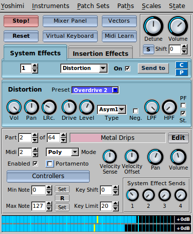
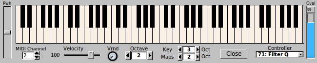
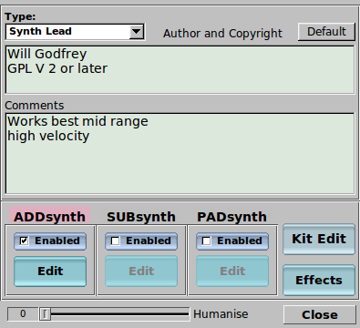
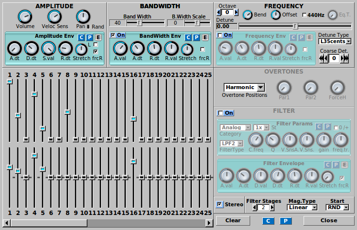
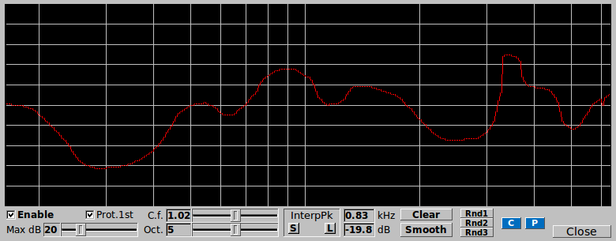

Here you can find screenshots showing some of Yoshimi's many controls.

The main window - the starting point for most Yoshimi adventures
Mixer controls in 8x2 configuration, with 6 active parts

The virtual keyboard, containing many additional controls
Just one of the many instrument banks that are shipped with Yoshimi.

An example of instrument properties - active engines and metadata
Controls for the PadSynth engine

Controls for the SubSynth engine

A resonance control window - in this case for an AddSynth voice
Controls for the AddSynth engine
Controls for an AddSynth voice - each instance can have up to 8 voices.
The voice list provides an overview and an easy way to navigate and tweak
important parameters.
Waveform controls - with both simple and advanced means of adjustment.
Vector configuration - for controlling parameters with a joystick.
Instrument search - making it easier to locate instruments by types